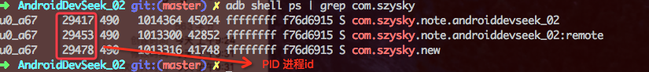
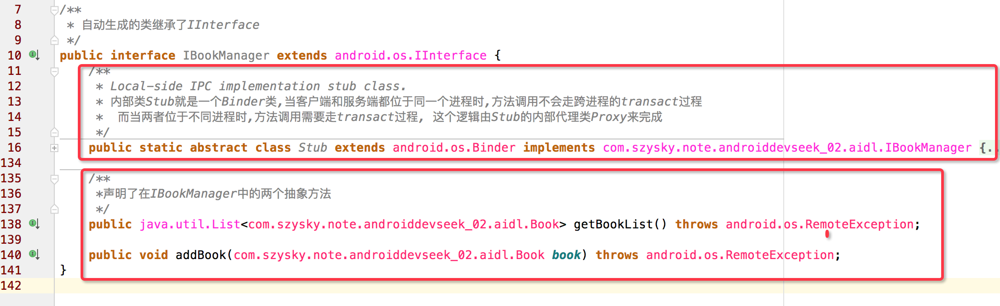
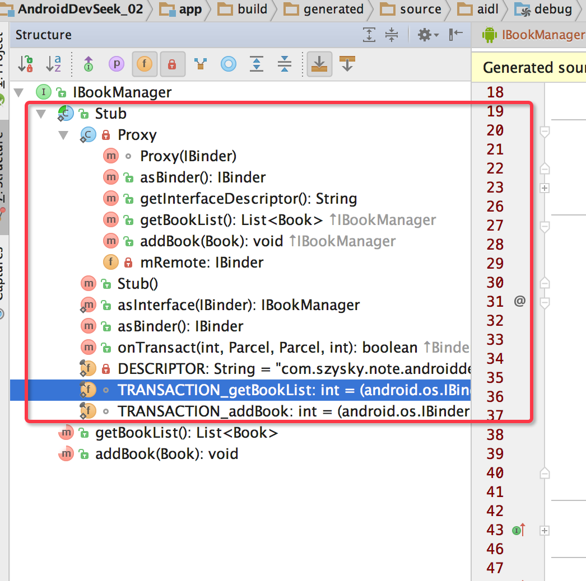
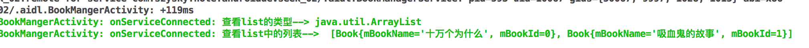
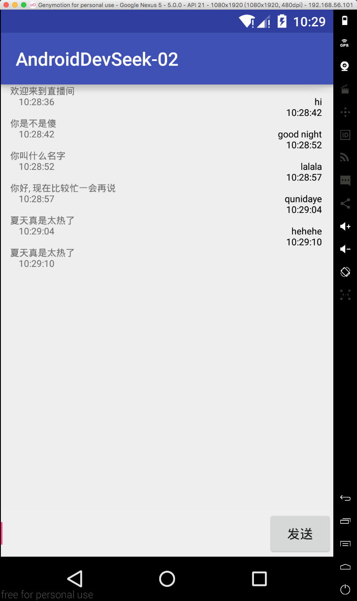

第二章: Android中的IPC机制,深入记录Bundle, 文件共享, AIDL, Messenger, ContentProvider, Socket等进程间的通信.
Android IPC简介
IPC是Inter-Process Communication缩写,含义为进程间通信. 按照操作系统中的描述,线程是cpu调度的最小单元,而进程一般指一个执行单元. 进程中可以有一个或者多个线程.
不同的操作系统有着不同的IPC机制:
- Windows: 通过剪切板, 管道, 信号量来进行进程间通信
- Linux: 通过命名管道, 共享内存, 信号量等来进行进行进程间通信
- android: 虽然基于Linux内核,但是使用了独有的Binder机制, 也可以Socket进行通信
使用场景: 可能有些模块因为特殊原因需要运行在单独的进程中; 或者为了加大一个应用可使用的内存; 又或者我们需要去另外一个进程去获取数据,必然需要跨进程.
Android中的多进程的模式
开启多进程模式
如果你想在一个应用中使用多个进程,通过清单文件给四大组件添加android:process属性,就可以很方便的开启多进程.
还有一种非常规的创建方式,通过JNI在native层去fork一个新的进程.这种只做了解.

例如这样,当我们依次打开MainActivity, SecondActivity, ThirdActivity.此时应该打开了三个进程.
我们来检测一下, 你可以直接使用DDMS来查看进程,这里使用命令行来测试
$ adb shell ps | grep com.szysky 你可以直接使用adb shell ps这会把系统所有进程展示出来, 你可以加上过滤信息| grep xxx xxx替换你需要过滤出来信息即可

你可能已经发现在创建新进程的时候使用两种不同的方式
- 当以
:开头的进程,属于当前应用的私有进程,其他应用的组件不可以和它跑在同一个进程 - 当不以
:开头,那么进程属于全局进程,其他应用通过ShareUID方法可以和它跑在同一个进程
Android系统会为每一个应用分配唯一的UID. 相同UID的应用才能共享数据. 但是两个应用通过ShareUID跑在同一个进程是有要求的. 除了具有相同的ShareUID并且还要签名相同才可以. 这时如果不在同一进程他们之间可以共享data目录,组件信息等. 如果还在同一进程, 那么他们还能共享内存数据.
进程模式的运行机制
开启多进程简单,但是如果不能处理好其中的特性,那么受伤的总会是你.
先说第一个比较严重的问题. 静态变量不在共享. 还是直接三个类的例子,如果在mainActivity中对静态变量进行修改, 在SecondActivity取出这个静态发现是main没修改之前的. 这说明两个进程间即使是静态属性也是无法共享.
其实这是因为这两个类运行在两个进程间,而每个单独的进程又会分配一个独立的虚拟机, 所以每个虚拟机在内存分配上有不同的地址空间.对于不同虚拟机访问同一个对象就会产生多份副本. 副本之间互相独立不干扰彼此.
一般情况下多进程可能面临的问题:
- 静态成员和单例模式完全失效
- 线程同步机制完全失效
- SharedPreferences的可靠性下降
- Application会多次创建
2中因为不是一块内存,所以不管是锁对象还是锁全局都无法保证线程同步,因为不是同一个对象. 3中因为Sp不支持两个进程同时读写,因为底层是通过读写XML文件实现的,并发可能会触发异常. 4中运行在多个进程中,那么就会创建多个虚拟机,每个虚拟机都有一个对应Application并需要启动加载这个文件.
一个应用的多进程:它就相当于两个不同的应用采用了ShareUID的模式. 每个进程都会拥有独立的虚拟机, Application以及内存空间
IPC基础概念
关于IPC主要包含三方面的内容: Serializable接口, Parcelable接口, 以及Binder
Serializable接口
Serializable是Java提供的一个序列化接口,这个一个空接口. 如果我们想使用只需要实现Serializable接口,并声明一个long类型的常量serialVersionUID(不声明也是可以,但是在反序列化会出现错误).
javabean 的实现
public class Student implements Serializable{ |
序列化的代码如下图,并附上结果.

好了说一下serialVersionUID这个属性. 即使我们不声明系统会根据当前类结构(成员变量等)生成一个hash为serialVersionUID, 虽然这样也可以但是如果在你把一个对象序列化的到磁盘的一个文件的时候. 对这个对象增加了一个成员变量,那么在反序列的时候就会报错. 因为当你反序列化的时候对象如果没有serialVersionUID还会重新计算.这时反序列化的hash和序列化的hash就不一致了.
关于根据当前类结构计算hash值,有两点需要注意:
- 静态成员变量属于类不属于对象,所以不参与序列化的过程
- 其次用
transient关键字标记的成员变量不参与序列化的过程.
系统默认的序列化过程是可以改变的,通过实现writeObject和readObject可以重写默认的序列化和反序列化过程. 这里就不详细说明
Parcelable接口
系统已经为我们提供了很多实现了Parcelable接口的类,他们都可以直接序列化. 例如intent, Bundle, Bitmap, 同时List和Map也可以序列化.前提是他们里面的每个元素都可以序列化.
实现Parcelable接口主要复写四个, 我们可以直接定义好javabean直接让AS帮我们实现.
- writeToParcel() 主要完成序列化功能
- CREATOR 主要完成反序列化
- 接收参数parcel的构造函数 用于从序列化后的对象中创建原始对象
- describeContents() 几乎所有情况下都返回0,只有当前对象中存在文件描述符时返回1
关于Parcelable和Serializable的取舍
- Serializable: 适合序列化到设备或者序列化后通过网络传输.
- Parcelable: 主要用在内存序列化上. 不需要大量的I/O操作,所以在内存中使用高效.
了解Binder
- 代码层面: Binder是Android中的一个类,它实现了IBinder接口
- IPC角度: Binder是Android中的一种跨进程通信方式.
- 物理设备角度: Binder也可以认为是一种虚拟的物理设备,设备驱动是/dev/binder
- Framework角度: Binder是ServiceManager连接各种Manager和相应的ManagerService的桥梁.
- Android应用角度:Binder是客户端和服务端进行通信的媒介.
日常开发中,Binder主要用在Service包括AIDL和Messenger. 而普通的Service中的Binder不涉及进程间的通信,无法触及Binder的核心. 而Messenger底层其实就是AIDL.所以我们利用AIDL来分析Binder的工作机制
创建AIDL实例
新建三个文件 Book.java Book.aidl 和IBookManager.aidl
首先创建一个Book类并实现Parcelable接口,然后在这个类所在的包上右键,如图所示

如果名字不能为Book,可以先随便写一个,创建之后修改. 然后按图修改,

文件声明完,我们只需要重新Make一下工程就可以.Build --> Rebuild Project或者Make Project

Make之后会在app -> build -> generated -> source -> aidl -> debug -> … 出现系统自动生成好的java类. 我们需要对其进行分析
看下图了解一个大体结构

上图圈出了两个部分,部分二应该很清楚就是我们定义在aidl中的两个抽象方法. 而部分一在图上的内部类Stub写了说明. 我们自定义的两个抽象方法,在内部类中用了两个整形int值来标识两个抽象方法,用在transact()中可以识别客户端请求哪个方法.
这个继承了IInterface的接口的核心实现:就是内部类Stub和Stub的内部代理Proxy
先看一下内部类的结构图:

说明直接放图,写在代码上,在git上的根目录的aidl的java类说明文件夹也有添加了注释的类.

有两点需要注意:
- 客户端发起远程请求时,当前线程会被挂起直到服务器进程返回数据,所以注意线程是否在意耗时
- 由于服务端Binder方法运行在Binder线程池中,所以不管Binder方法是否耗时都应该采用同步方式,因为已经在一个线程中了
我们也可以手动实现Binder类,这里不再细说,在git仓库的项目中有一个manual包里面是关于手动实现Binder的代码.
其实 不管是手动实现Binder也好,或者AIDL文件实现Binder也好. 其实两者的工作原理都是一样的, AIDL文件的存在意义是系统为我们提供了一种快速实现Binder的工具,仅此而已.
Binder生命状态的监听
由于Binder是运行在服务端,如果服务端进程异常终止,那么我们到服务端的Binder连接也就断裂(Binder死亡).就会导致调用失败,所里系统提供了死亡代理的方法 就是当Binder死亡时,我们就会收到通知,这个时候就可以重新发起连接请求而恢复连接
首先创建监听的DeathRecipient对象
IBinder.DeathRecipient mDeat = new IBinder.DeathRecipient() { |
当客户端绑定远程服务成功的时候,给binder设置死亡代理
xxxxManager.Stub.asInterface(binder); |
linkToDeath的第二个参数是个标志位,直接设0即可. 另外也可以通过Binder的方法isBindAlive也可以判断Binder是否死亡.
Android的几种跨进程的方式
使用Bundle
由于Bundle实现了Parcelable接口,所以在四大组件中的三大组件(Activity, Service, Receiver)都支持在Intent中传递Bundle.
所以如果在一个进程中启动了另一个进程的三大组件,就可以在Bundle中附加我们需要的信息通过Intent发送出去. 当然传递的类型必须是能够被序列化的, 例如基本数据类型,实现了Parcelable和Serializable接口的对象和一些Android支持的特殊对象.
使用文件共享
练习代码对应仓库中的userbundle包中.
文件共享适合在对数据同步要求不高的进程之间进行通信,并且要妥善的处理并发读写的问题.
两个进程通过读/写同一个文件来交换数据. 例如进程A把数据写入文件中,而进程B从文件中读取出来数据.
Android是基于Linux系统, 所以对于并发读写文件可以没有限制的执行. 这里不像Windows系统,对于一个文件如果加了排斥锁将会导致其他线程无法对其进行访问.
关于这部分的练习, 在之前练习Binder的时候已经练习过了. 代码在项目中的MainActivity中
虽然序列化反序列达到的效果是可以恢复对象里面的属性值,但是反序列每回都是一个新的对象.
SharePreferencess是Android提供的一个轻量级方案,通过键值对存储数据,底层采用XML文件来进行存储. 存储路径/data/data/package name/shared_prefs目录下. 也属于文件的一种,但是由于系统对SP的读写存在一定的缓存策略,内存中会有一份缓存,所以多进程下,系统对它的读写也就变得不可靠.
使用Messenger
Messenger(信使). 不同的进程中可以传递Message对象, 在Message中放入我们需要传递的数据,就可实现进程间传递. Messenger是一种轻量级的IPC方案,它的底层实现AIDL. 看一些构造函数
public Messenger(Handler target) { |
无论是IMessenger还是Stub.asInterface. 可以明显看出AIDL的痕迹.
因为Messenger对AIDL进行了封装,使得在使用时更加简单,并且它的处理方式是一次处理一个请求,因此服务器端不用考虑线程同步因为服务端不存在并发执行的情形.
具体实现Messenger
1.服务端
创建一个Service作为服务端来处理客户端的请求, 同时创建一个Handle并通过它来创建一个Messenger对象,然后在Service的onBind()方法中返回这个Messenger对象底层的Binder.
最后这个组件在清单文件中声明加上android:process="com.szysky.test"属性.已达到模拟多进程的场景
public class MessengerService extends Service { |
别忘了清单文件
<service android:name=".message.MessengerService" |
2.客户端
直接用一个activity作为客户端, 首先绑定之前创建的服务端的Service, 绑定成功时通过ServiceConnection对象接收到服务端返回的IBinder,用IBinder对象创建一个Messenger. 通过这个Messenger就可以往服务端发送消息. 如果我们需要服务端也能够回应客户端. 那么就要在客户端同之前服务端一样通过Handle创建一个Messenger对象, 并把这个Messenger在通过连接成功返回的IBinder创建的Message对象通过replyTo参数传递给服务器. 这个服务器就可以通过replyTo参数来回应客户端.
/** |
在使用Messenger进行数据传递必须将数据放入到Message中. 而Messenger和Message都实现了序列化接口. 所以可以在进程间通信.
Message的能使用的载体只有what, arg1, arg2, Bundle 以及replyTo. 这里有一个载体需要注意object,它在同一个进程很实用,但是在版本2.2之前是不支持跨进程的,虽然进行了改进之后,但是也只是支持系统提供实现的某些对象才可以. 所以使用的时候需要注意.
顺便绘制了一个Messenger通信的流程图, 可以对代码的调用顺序理解的更清楚.

使用AIDL
虽然Messenger使用方便, 但是要清楚它是以串行的方式处理客户端发来的消息,如果有大量并发的请求. 或者需求是跨进程调用服务端的方法时. 就无法使用Messenger. 这个时候就该AIDL
对于使用AIDL的流程简单梳理一遍
服务端
服务端创建一个Service用来监听客户端的连接请求, 然后创建一个AIDL文件,将暴露给客户端的接口在这个AIDL文件中声明,最后在Service中实现这个AIDL接口并在onBind()返回即可.
客户端
绑定服务端的Service,绑定成功后,将服务端返回来的Binder对象转成AIDL接口所属的类型,接着就可以直接调用AIDL中的方法了.
AIDL相关代码在仓库项目的java路径下的aidl包中,包中可能是包含实现订阅的代码,可以通过git回退到’使用AIDL实现简单的进程通信’版本查看基础实现
详细代码在上面仓库中都有,这里不全部贴出来,记录一下需要注意的地方.
AIDL中所支持的类型
- 基本数据类型
- String 和 CharSequence
- List: 只支持ArrayList, 里面每个元素都必须能被AIDL支持
- Map: 只支持HashMap, 里面的每个元素都必须被AIDL支持
- Parcelable: 所有实现了Parcelable接口的对象
- AIDL: 所有的AIDL接口本身也可以在AIDL文件中使用
这里请注意,上面支持类型中Parcelable和AIDL比较特殊,自定义的Parcelable对象和AIDL对象必须要显示的import引入, 这是AIDL的规范需要遵循, 如下Book类
import com.szysky.note.androiddevseek_02.aidl.Book;//必须Book的全限定名 |
如果用到了自定义对象实现了Parcelable那么就需要创建一个同名的aidl文件
package com.szysky.note.androiddevseek_02.aidl; |
AIDL中除了基本数据类型外,其他类型的参数必须标上方向out , in, inout.分别表示输入,输出,输入输出型. 按需而定可以节省不必要的操作在底层实现的开销. 最后一点AIDL接口中只支持方法,不支持声明静态常量.
在服务端用了CopyOnWriteArrayList数组来保存所有书籍. 这个集合的特性是支持并发读写. 在说Binder的时候提到过, AIDL方法是在服务端Binder线程池中执行的, 所以当多个客户端同时连接,会存在多线程并发的问题. 所以使用CopyOnWriteArrayList集合可以进行自动的线程同步.与之相似的还有ConcurrentHashMap这个在LRU机制中使用到过
这里有知识点. 之前说过AIDL中能过使用的只有ArrayList. 而CopyOnWriteArrayList也并不是ArrayList的子类. 其实AIDL所支持的是抽象的List, 而List只是一个接口, 虽然服务端返回的是CopyOnWriteArrayList,但是在Binder中会按照List的规范去访问数据并最终形成一个新的ArrayList传递给客户端.
看下面的log图在客户端接收返回的CopyOnWriteArrayList实际上是ArrayList类型

git仓库的代码的aidl包中 最后保存的是实现了客户端和服务端的观察者模式(可以通过git版本切换之前代码), 通过客户端注册监听接口,
在服务端每当有新书来的时候,通知已经注册了的客户端.
需要注意的几点
线程问题
当有新书的时候,服务端回调的是客户端实现的接口里面的方法. 这个方法实际是在客户端的线程池中执行的. 所以要处理处理UI的问题, 解决方案可以创建一个Handler,将其切换到客户端的主线程中
private INewBookArrivedListener mNewBookListener = new INewBookArrivedListener.Stub() { |
对象不一致,导致接触绑定失败
服务端不能再用CopyOnWriteArrayList来记录绑定过的客户端. 因为这里一定要清楚对象是不能跨进程的当我们客户端注册监听传入一个监听对象到服务端, 在解绑的时候再次传入一个进行判断与注册时相同的对象时删除达到解除绑定效果时是无效的. 因为服务端在注册和解绑的时候是两个反序列化的对象完全不一致.
RemoteCallbackList是系统专门提供的用于删除跨进程listener的接口. 接收的是一个泛型,支持管理任意的AIDL接口,从声明就可以看出, 因为AIDL接口都继承IInterface
内部实现是一个Map结构 key是IBinder类型, value是Callback类型.
ArrayMap<IBinder, Callback> mCallbacks= new ArrayMap<IBinder, Callback>(); |
不管是注册还是解注册,多进程到服务端都会生成不同的对象. 但是这些不同的对象有一个共同点, 底层的Binder对象是同一个, 利用这个特性可解决上面的问题.
RemoteCallbackList 当客户端进程终止后, 它能够自动移出客户端所注册的listener. 并且内部实现了线程同步的功能, 所以在注册和解注册的时候不需要做额外的线程工作.
在使用的使用,虽然名字有List但是他并不是一个List我们要遍历的通知监听者的时候,要使用bigenBroadcast和finishBroadcase成对出现.
//遍历集合 去调用客户端方法 |
当客户端调用远程服务的方法,被调用的方法运行在服务端的Binder线程池中,同时客户端会被挂起, 所以你如果在主线程(客户端的onServiceConnected和onServiceDisconnected就是UI线程)调用服务端的耗时方法, 你多点几次就很容易出现ANR. 比方说在服务端的getBookList()睡上十秒,可以复现ANR.
监听死亡状态: 在整理Binder的时候有说了一种DeathRecipient的方式,下两种都可以
onServiceDisconnected()UI线程被回调binderDied()在客户端的Binder线程池中被回调
还记得在绑定的时候bindService(intent,mConnection, Context.BIND_AUTO_CREATE);其中参数3如果设置这个模式, 当服务或线程死亡,还会重新启动的.
权限验证
- 在服务端的**onBinder()**回调中判断权限.
- 在服务端实现的AIDL接口中的**onTransact()**进行包名判断或者权限
第一种:
先清单文件中注册一个自定义的权限
<permission |
在清单文件中添加这个权限的使用资格
<uses-permission android:name="com.szysky.permission.ACCESS_BOOK_SERVICE"/> |
然后在**onBinder()**进行判断,如果没有那么就返回null, 这样客户端是无法绑定服务的
public IBinder onBind(Intent intent) { |
第二种
可以判断客户端的包名是否满足我们的需求,这里用com.szysky开头为例. 如果不符合方法返回false.那么调用服务的方法也会失效
|
使用ContentProvider
ContentProvider是Android提供专门用于不用应用进行数据共享的方式. 它的底层同样也是Binder. 因为系统封装, 所以它的使用比起AIDL要简单很多.
要实现一个内容提供者, 只需要写一个类继承ContentProvider,并复写六个抽象方法. 其中有四个是CURD操作方法. 一个**onCreate()用来做初始化. 一个getType()**用来返回一个Uri请求所对应的MIME类型,比如图片还是视频等. 如果我们不关心那么可是直接返回NULL或者*/*.
这六个方法根据Binder工作原理,都是运行在ContentProvider的进程中. 除了**onCreate()**是被系统回调运行在主线程, 其余的都在Binder的线程池中.
主要存储方式是表格的形式, 也可以支持文件格式,例如图片视频, 可以返回这类文件的句柄给外界来访问ContentProvider中的文件信息.
清单文件的声明
<provider |
authorities: 后面的值是指定这个ContentProvider的唯一标识.permission: 添加一个权限认证, 对于访问者必须添加了这个使用权限的声明.
查询的时候通过Uri对authorities声明值得解析就可以找到对应的ContentProvider
Uri uri = Uri.parse("content://com.szysky.note.androiddevseek_02.provider"); |
为了后续操作, 这里利用SQLiteOpenHelper来管理数据库,并创建两个表user和book,代码在仓库有,这里不写实现过程.
由于有两个表支持被访问, 所以应该为每一个不同的表设定单独的Uri和Uri_Code 并将其关联. 这样外界访问的时候可以根据Uri得到Uri_Code. 也就在ContentProvider知道要处理的具体事件.
在新建的ContentProvider类中进行关联, 如下
private static final String AUTHORITY = "com.szysky.note.androiddevseek_02.provider"; |
针对query方法进行演示,其他三个类似,代码有全部实现的例子, 在自定义Provider文件中.
/** |
如果需要监听Provider内容的变化, 那么可以在Provider中update, delete, insert. 中操作完数据库之后. 使用getContentResolver().notifyChange(uri,null);来通知外界当前ContentProvider中数据已经发生改变. 而外部要想观察其变化. 使用ContentResolver的rigisterContentObserver方法来注册观察者.
线程安全问题
如果只有一个SQLiteDataBase对象被使用, 那么增删改查不会出现线程安全问题, 因为其内部对数据库的操作是有同步处理. 但是如果多个SQLiteDataBase对象来操作数据库就无法保证其线程安全. 这个时候就要注意了.
使用Socket
Socket也称为套接字. 是网络通信中的概念, 它分为流式套接字和用户数据包套接字两种. 分别对应于网络的传输控制层中TCP和UDP协议.
使用Socket通信, 需要在清单文件添加权限的申请
<!--Socket通信额外需要的线程--> |
服务端 需要启动服务, 并且在线程中建立TCP服务, 然后监听一个端口. 当客户端建立连接的时候就会生成一个Socket流. 可以保持后续的持续通信. 每一个客户端都对应一个Socket. 如果客户端断开连接. 服务端需要做好相应的Socket流关闭并结束通话线程. 可以通过在客户端断开的时候服务端的接收字节流会是null来判断连接是否还存活.
首先需要开启一个新线程, Runnable接口这样实现, 以下是伪代码, 没有捕捉异常
// 监听 3333 端口 |
private void responseClient(Socket client) throws IOException { |
最后就是要在onDestroy()中把循环中判断服务存活的标识置为false, 让开启的线程都能自动走完关闭.
客户端
在onCreate()先startService开启TCP的服务, 然后开启一个线程准备连接Socket. 可以加上失败重连的的机制. 只要获取到了Socket, 就和之前服务端一样获取输入输出流进行对应的操作.
贴出客户端的核心代码, Runnable接口实现的 ,同样是伪代码
Socket socket = null; |
demo图例Socket相关代码存在仓库的socket包中

各种IPC的差异以及选择
| 名称 | 优点 | 缺点 | 使用场景 |
|---|---|---|---|
Bundle |
简单易用 | 只能传输Bundle支持的数据类型 | 四大组件间的进程间通信 |
文件共享 |
简单易用 | 不适合高并发场景,并且无法做到进程间的即时通 | 无法并发访问情形, 交换简单的数据实时性不高的场景 |
AIDL |
功能强大 | 使用稍复杂,需要处理好线程同步 | 一对多通信且有RPC需求 |
ContentProvider |
在数据源访问方面功能强大,支持一对多并发数据共享 | 可以理解为受约束的AIDL,主要提供数据源的CRUD操作 | 一对多的进程间的数据共享 |
Messenger |
功能一般, 支持一对多串行通信,支持实时通信 | 不能很好处理高并发,不支持RPC,数据通过Message进行传输, 因此只能传输Bundle支持的数据类型 | 低并发的一对多即时通信,无RPC需求,或者无需要返回结果的RPC需求 |
Socket |
功能强大,可以通过网络传输字节流,支持一对多并发实时通信 | 实现细节稍微有点繁琐,不支持直接的RPC | 网络数据交换 |
下一章: View的事件体系